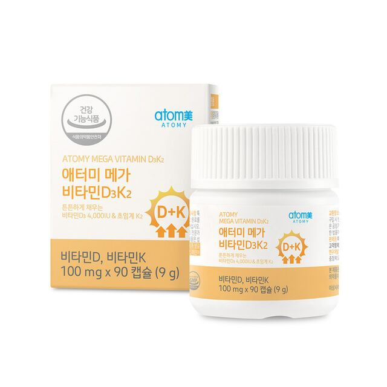
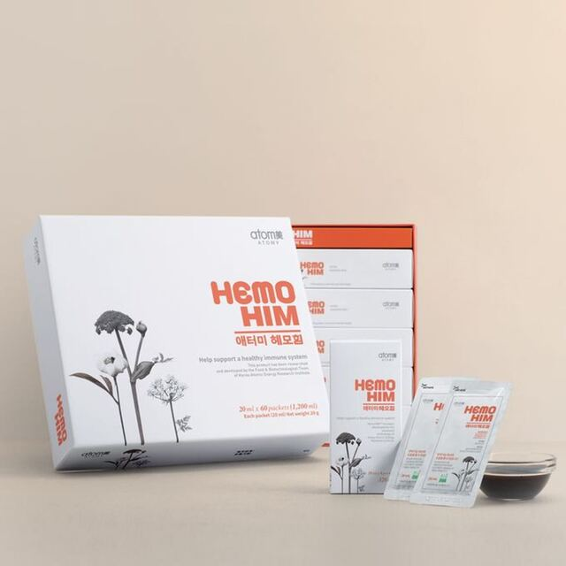
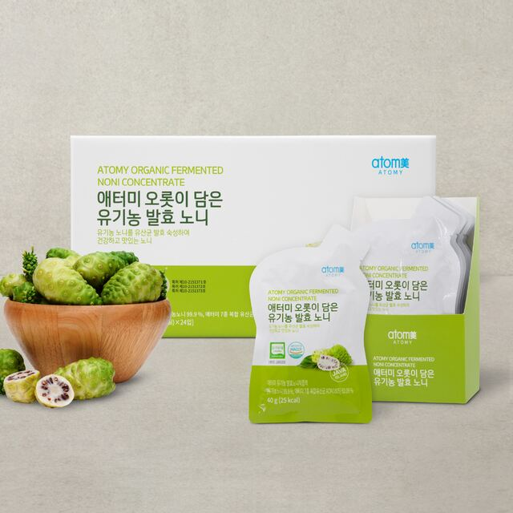
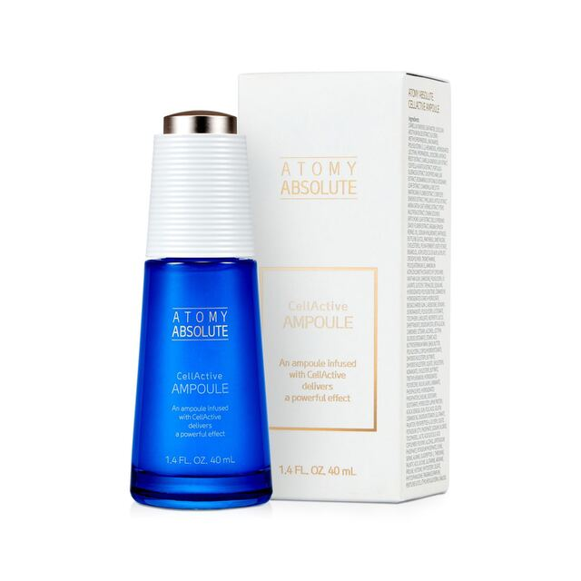

Katalog produk Atomy: manfaat, cara pakai, dan dosis
Panduan HemoHIM, vitamin C Atomy, noni fermentasi, ginseng merah Korea, omega-3, Absolute CellActive, dan 130+ produk — dalam bahasa Indonesia, mudah dicari.




Panduan katalog Atomy Indonesia
Situs ini membantu member dan calon konsumen mencari manfaat, cara pakai, dan dosis produk Atomy. Yang paling sering dicari di Indonesia: HemoHIM, vitamin C, koyo/essential oil patch, noni, ginseng, omega-3, dan skincare Absolute CellActive.
Atomy resmi di Indonesia: id.atomy.com. Katalog ini tidak menjual barang dan tidak menggantikan label BPOM pada kemasan.
Pertanyaan yang sering dicari
Cara minum HemoHIM Atomy?
Dewasa: 1 sachet, 2 kali sehari (pagi dan malam). Anak usia 6 tahun ke atas: 1 sachet sehari. Tidak untuk anak di bawah 6 tahun. Hamil, menyusui, atau gangguan perdarahan: konsultasi dokter.
Apa produk Atomy yang paling laris di Indonesia?
HemoHIM biasanya nomor satu, diikuti koyo/essential oil patch dan Vital Color Vitamin C. Skincare Absolute CellActive juga sangat diminati.
Apakah ini toko Atomy resmi?
Bukan. Ini katalog edukatif. Pembelian original lewat member atau mall resmi Atomy Indonesia.